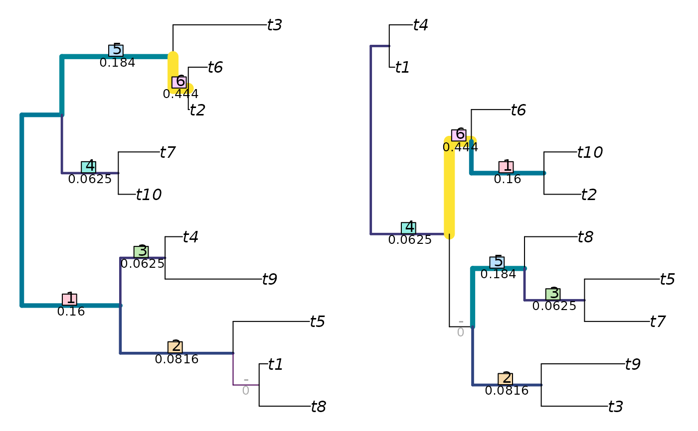

Implements the Jaccard-Robinson-Foulds metric of Böcker et al. (2013).
JaccardRobinsonFoulds(tree1, tree2, k = 1L, arboreal = TRUE, similarity = FALSE, normalize = FALSE, reportMatching = FALSE) JaccardSplitSimilarity(splits1, splits2, k = 1L, arboreal = TRUE, reportMatching = FALSE)
| tree1 | Trees of class |
|---|---|
| tree2 | Trees of class |
| k | An arbitrary exponent to which to raise the Jaccard index.
Integer values greater than one are anticipated by Böcker et al.
The Nye et al. metric uses |
| arboreal | Logical specifying whether to enforce arboreal matches, by assigning zero similarity to contradictory pairs of partitions on an ad hoc basis. |
| similarity | Logical specifying whether to report the result as a tree similarity, rather than a difference. |
| normalize | If a numeric value is provided, this will be used as a
maximum value against which to rescale results.
If |
| reportMatching | Logical specifying whether to return the clade matchings as an attribute of the score. |
| splits1 | Logical matrices where each row corresponds to a terminal,
either listed in the same order or bearing identical names (in any sequence),
and each column corresponds to a bipartition split, such that
each terminal is identified as a member of the ingroup ( |
| splits2 | Logical matrices where each row corresponds to a terminal,
either listed in the same order or bearing identical names (in any sequence),
and each column corresponds to a bipartition split, such that
each terminal is identified as a member of the ingroup ( |
In short, this finds the optimal matching that pairs each branch from one tree with a branch in the second, where matchings are scored according to the size of the largest bipartition that is consistent with both of them, normalized against the Jaccard index, and raised to an arbitrary exponent.
By default, arboreal matchings are enforced.
Note that the settings k = 1, arboreal = FALSE give the similarity metric
of Nye et al. (2006); a slightly faster implementation of this metric is
available as [NyeTreeSimilarity].
The examples section details how to visualize matchings with non-default parameter values.
JaccardSplitSimilarity: Calculate tree similarity from splits
instead of trees.
If normalize = TRUE, then results will be rescaled from zero to one by
dividing by the maximum possible value for trees of the given topologies,
which is equal to the number of partitions in both trees.
You may wish to normalize instead against the maximum number of partitions
present in a pair of trees with n terminals, by specifying
normalize = n - 3.
Nye TMW, Liò P, Gilks WR (2006). “A novel algorithm and web-based tool for comparing two alternative phylogenetic trees.” Bioinformatics, 22(1), 117--119. doi: 10.1093/bioinformatics/bti720 .
Böcker S, Canzar S, Klau GW (2013). “The generalized Robinson-Foulds metric.” In Darling A, Stoye J (eds.), Algorithms in Bioinformatics. WABI 2013. Lecture Notes in Computer Science, vol 8126, 156--169. Springer, Berlin, Heidelberg.
Other tree distances: KendallColijn,
MatchingSplitDistance,
NyeTreeSimilarity,
RobinsonFouldsInfo,
TreeDistance
{ set.seed(2) tree1 <- ape::rtree(10) tree2 <- ape::rtree(10) JaccardRobinsonFoulds(tree1, tree2, k = 2, arboreal = FALSE) JaccardRobinsonFoulds(tree1, tree2, k = 2, arboreal = TRUE) JRF2 <- function (tree1, tree2, ...) JaccardRobinsonFoulds(tree1, tree2, k = 2, arboreal= TRUE, ...) VisualizeMatching(JRF2, tree1, tree2, matchZeros = FALSE) }#> Warning: conversion failure on '−' in 'mbcsToSbcs': dot substituted for <e2>#> Warning: conversion failure on '−' in 'mbcsToSbcs': dot substituted for <88>#> Warning: conversion failure on '−' in 'mbcsToSbcs': dot substituted for <92>#> Warning: conversion failure on '−' in 'mbcsToSbcs': dot substituted for <e2>#> Warning: conversion failure on '−' in 'mbcsToSbcs': dot substituted for <88>#> Warning: conversion failure on '−' in 'mbcsToSbcs': dot substituted for <92>